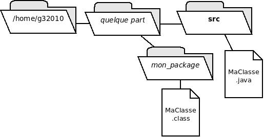

Résumons ce que nous avons déjà vu.
package
suivi du nom
que l'on désire donner au package ;
Mais, concrétement, quel dossier choisir pour placer les classes ? Il existe plusieurs façons de s'organiser ; on va vous en présenter deux.
D'abord, résumons ce que vous faisiez jusqu'à présent sans package. Avec cette approche, le source et la classe se trouvent dans un même dossier, quelconque.
nano Test.javajavac Test.javajava TestDans cette approche, les sources sont séparés des classes mais sont dans un dossier commun.
Illustration de la 1ère approchemkdir srcnano src/Test.javag12345.td6).
javac -d . src/Test.javajava g12345.td6.Test
Dans un sous-dossier du td6
(par exemple : td6/cas1),
faites une copie de votre programme
Hello.java
développé au td3
et placez-le dans un package en suivant
l'approche ci-dessus.
Quelle est la commande à utiliser pour compiler ?
Et pour exécuter ?
Dans cette approche, toutes les classes
de tous vos projets sont placées dans un dossier commun
(par exemple : ~/classes)
~/classes.
Si ce n'est pas le cas,
il faut le définir (une fois pour toutes
dans le fichier de configuration du bash) :
CLASSPATH=$CLASSPATH:~/classes.
nano Test.java
en prenant soin de commencer le fichier par un package qui a du sens
(par exemple : g12345.td6).
javac -d ~/classes Test.javajava g12345.td6.Test
Il s'agit du même exercice que pour la première approche.
Dans un autre sous-dossier du td6
(par exemple : td6/cas2),
faites une copie de votre programme
Hello.java
développé au td3
et placez-le dans un package en suivant
l'approche ci-dessus.
Quelle est la commande à utiliser pour compiler ?
Et pour exécuter ?